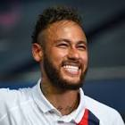

|  | Neymar |
| Gender | Male |
| Nationality | Brazil |
| Ethnic | Brazilian |
| Job | Brazilian Footballer |
| Descs | The 27-year-old still has so much more to prove over the coming years. He’s usually delivered for Brazil and, in fairness, was on the path to unquestionable super-stardom at Barcelona, but his time at PSG has tainted his previously glowing reputation, as he’s lacked the necessary competition to raise his game to the next level |
Affiliation
| Club as Player | Paris Saint-Germain |
| Barcelona FC | |
| Santos |
Relationship
| Father | Neymar Santos Sr |
| Agent | Wagner Ribeiro [ex] |
2011 06 11 Retrieve
[Neymar on his desire to win the FIFA Ballon d’Or as a Santos player] Nothing is impossible. Pele became the player of the century at Santos. Only by playing, by winning titles, can I achieve this. With time we’ll be able to answer whether [I can win it]. But I dream about it
- 2013 06 03
- On that day, a smiling Neymar was presented at Camp Nou, Barcelona having beaten out their great rivals to the Santos and Brazil prodigy after a bitter transfer battle
2015 02 07 Retrieve
[Neymar on Philippe Coutinho] We have been good friends since we were 16. Not only is he a fantastic player, he is a good guy to have in the dressing room, always positive and making jokes. Since Luis [Suarez] joined us at Barcelona, Liverpool have not had that one player they can look to for that special moment. Couto can be that player for them, I’m sure. When he has the ball at his feet, he can make things happen for himself and he can make things happen for other players. He is a very special player
2015 09 12 Retrieve
[Neymar on being benched] I don’t like being benched. I’m not used to it. I don’t want to get used to it
2015 12 21 Retrieve
[on Messi, Suarez, and Neymar] For me it’s a great honour to form part of this forward line and to make history with them. I am a big fan of them (Messi and Suarez) as players and even more so as people
2015 12 22 Retrieve
[on Messi, Suarez, and Neymar] I believe that this attack with Messi and Suarez is the best I’ve played in. They are two superstars and we get along very well on and off the pitch. So everything comes together to make it work. Even though we have a very strong rivalry on the national teams - Brazil, Argentina and Uruguay - we get along really well. I’m really proud to be part of this trident and proud that we are making soccer history. We don’t want to stop now, we want to keep writing history
2015 12 23 Retrieve
[on Messi, Suarez, and Neymar] This is the best moment of my career so far. I am very happy with Leo [Messi] and Luis [Suarez]. They help me and I help them
2015 12 24 Retrieve
[on Messi, Suarez, and Neymar] Secret of MSN? Friendship and modesty. Leo and Luis are great friends, I hope to play with them for a long time, there are no egos
2016 03 05 Retrieve
[Neymar on hypothetically choosing to inherit team-mate Lionel Messi’s left peg instead of Ronaldo’s right] I’d take Messi’s left foot, with all due respect to Cristiano, because my right foot is pretty handy too
2016 08 27 Retrieve
[Neymar announces he’s stepping down as Brazil captain following the country’s Rio 2016 triumph] It was an honour to be captain, but from today I stop being captain. I will send a message to [senior coach] Tite that, from now, he can look for another captain. I do not like to put one title above the other - every competition I contest and win is important. Of course, it had great importance to Brazil and thank God we did it - after a lot of struggling, work and concentration
2016 09 17 Retrieve
[Neymar on the synergy between himself, Lionel Messi and Luis Suarez at Barcelona] We are at a place now where we know the way each other thinks, the runs we make, the positions we will be in. We can still get better though, our communication and understanding of each other is improving all the time. We are not playing for ourselves, nobody is looking for personal glory. It is always nice to score goals, but if I score, if Luis scores, if Leo scores, it doesn’t matter - we are as happy creating goals for each other as scoring them. Our understanding on the field is helped by our relationship off it. We are all good friends, and I think that shows in the way we play. It is very early in the season, we can get better, and help make it a very successful season for Barcelona
2016 10 16 Retrieve
[Neymar Santos Sr, recently praised his son’s Argentine colleague, and explained that Messi and Ronaldo inspired Neymar to be the player he has become] We all know who Messi is and what he means. He is the idol of my son and, for him, it’s a pleasure being at his side. He is always happy for playing together and he is playing here for Messi.
If Messi and Cristiano Ronaldo never existed, probably Neymar never existed too; the same with Pele and Maradona, both inspired a lot of players
Neymar is one of the names on the 30-man nominee list for this year’s Ballon d’Or award, but his father believes the accolade should go to Messi.
Messi deserves the Ballon d’Or
2016 10 29 Retrieve
[Neymar’s father tells Cope the reason his son plays for Barcelona is because of Lionel Messi and that the Argentinian star is his son’s idol] We all know who Messi is and what he means. He is the idol of my son and for him is a pleasure being at his side. He is always happy for playing together and he is playing here for Messi. If Messi and [Cristiano] Ronaldo never existed probably Neymar never existed too; the same with Pele and Maradona, both inspired a lot of players
2017 02 11 Retrieve
[Neymar talks about his FIFA World Cup ambitions] I’m not anxious, but I’m already thinking about the World Cup. I am a daydreamer; I can’t stop thinking, imagining how it would be to win a World Cup. But I will work hard, so that I’m prepared for 2018. I have many [ambitions]. I still have many things to do, there’s a lot of titles to be conquered
2017 04 01 Retrieve
[Neymar speaks about his partnership with Lionel Messi and Luis Suarez] Relationships are important off the field, we are friends. On the field, we complete each other. Messi and I play on the wings, Suarez in the middle. Messi is a player that I’ve admired since I came to Barcelona. He’s helped me since the moment I arrived. I’ve always admired his determination and attitude
2017 05 20 Retrieve
[Neymar believes he is currently having his best season with Barcelona FC] This is a great season for me. I even think I have had my best season since I arrived here. I do not know if I have reached a new level, it is hard to have that judgement when you are on the pitch. I have always had the same role from my arrival until today - it has not changed. I have always taken responsibility in this team and everyone knows their role. All I want to do is play with the best players in the world - and the best of all is Leo Messi. I dream of becoming the best. I think I can do it, but calmly and quietly - I am not in a hurry
2017 07 08 Retrieve
[Neymar discusses his start at Barcelona] I would walk into the dressing room and I would look to one side and see Messi and then I would look to the other side and I would see Xavi, Andres Iniesta, Gerard Pique and Dani Alves. I thought that I was inside a video game. One day I was playing with them on the games console and then the next day I was there next to them
2017 08 05 Retrieve
[Neymar speaks at his introductory press conference after completing his move to Paris Saint-Germain] It was not easy - I had to think a lot, I had to think what I wanted to do with my life. A lot of people wanted me to talk about it but it’s difficult to communicate when you’re not 100 per cent sure what you want to do. But as soon as I made up my mind, I started communicating. This is what my heart told me to do. I always ask my heart every day and my heart told me, ‘Go to PSG’
2017 08 19 Retrieve
[Neymar speaks after scoring a goal and providing an assist on his debut for Paris Saint-Germain in a 3-0 win over Guingamp] People think that leaving Barça is to die, but it’s the opposite. I’m more alive than ever. I play, I am very happy and football is the same. Only the country, the city and the team change, but football is the same
2017 10 21 Retrieve
[Neymar on Paris Saint-Germain team-mate Kylian Mbappe] He is a golden boy and he’s been doing very well. He’s a great player and has all the qualities to become one of the big names in football. Hopefully, I can do for him the same thing that Messi has done for me
2017 11 25 Retrieve
[Neymar tells about some of his future ambitions] I want to win the Champions League with PSG and then the World Cup. These are my biggest dreams at this moment and then who knows, maybe I’m going to get married
2017 12 23 Retrieve
[Neymar explains the differences between himself now compared to when the forward was starring for the host nation at Brazil 2014] The difference is hard to explain, but I think I’m more experienced, more wise, more ‘cascudo’, as we say in Brazil. This is because I had many experiences, I participated in a World Cup where we lost and I think I’ll be more prepared for the next one, because I know what it’s like to be in a World Cup, I can be better prepared. So the Neymar in 2018 is better than the Neymar in 2014
2018 01 15 Retrieve
[Neymar has managed significant action this year] January 12, 2010: earthquake in Haiti (230,000 dead, 220,000 injured). 8 years later, Handicap International and I continue to support Haitians. I truly hope to be visiting Haiti very soon
There are people who will like you, and people who will hate you even if you are the best person in the world. Don’t blame yourself if so-and-so thinks you’re boring. People can find what they want, it doesn’t change who you are!
- 2018 03 03
- Neymar has undergone successful surgery on his broken foot
2018 04 02 Retrieve
[Coupe de la Ligue the 36th major crown] Congratulation to everyone, I’m very happy for you. Allez PSG! Dani Alves, the congratulations are all the more special for you, brother, and I’m honoured to be part of this story. Hopefully there is more to come, including in July. I love you my idol!!
2018 04 16 Retrieve
[On defeating the defending champions 7-1 at Parc des Princes] I really wanted to be closer to you, congratulations guys! Allez Paris. I have learned to smile through difficulties and to believe in my dreams no matter how hard they may be.
2018 04 19 Retrieve
[Neymar believes the likes of Philippe Coutinho, Mohamed Salah and Eden Hazard are ready to illuminate the 2018 World Cup] There are lots of quality players, it’s the World Cup we’re talking about, only the best in the world. But Coutinho and [Gabriel] Jesus are two that can make a difference, I hope they do. Salah doesn’t play for a big national team, but he can have a good World Cup. There are also other very talented players: Hazard, [Kevin] De Bruyne, [Luis] Suarez. I hope we all can perform well and have a wonderful World Cup, but I expect them not to do so against Brazil.
[Neymar saw his 2014 campaign devastated by injury at the quarter-final stage] I’m happy to be part of a team that, for me, is the strongest right now. We have the quality players required to win and we’ll try to make it happen
2018 04 20 Retrieve
[LFP denies existence of €300m Neymar release clause] The LFP makes it very clear what Article 202 of its regulation stipulates: ‘Clubs can not conclude a contract containing a release clause providing for the termination of the contractual relationship by one or the other. Therefore, in application of this rule, Neymar’s contract cannot contain such a clause. And there is no such clause in the contract of the player approved by the legal commission of the LFP.
2018 04 21 Retrieve
[Neymar gives an update on his recovery from injury ahead of the World Cup] I’ll have enough time to return for the World Cup and prepare beforehand. It’s not good being injured, but I feel rested. We have to look at it from the positive angle. I hope I can get there even better than I was. I have some doubts, of course - it’s my first surgery, it’s normal. I’ll get in shape, work as hard as I can. From the moment I can resume training, I’ll dedicate myself even more because the dream is closer, the World Cup. I waited four years for this opportunity and now it’s closer
2018 04 30 Retrieve
[On Andres Iniesta] Maestro, I was honoured to be part of your career at Barcelona. I had already admired you from afar and when I had the chance to be closer I fell in love with your football, and more for the person you are away from the field. I will always tell my friends, children and family that I had the pleasure of celebrating goals and titles at your side. Barcelona thanks you, I thank you and football thanks you for everything you have done. Lots of luck for your future
2018 05 12 Retrieve
[Neymar has admitted that he misses playing with Barcelona stars Lionel Messi and Luis Suarez on a daily basis] The friendship that we had was something very beautiful. What I miss from Barcelona and about Barcelona is these two, due to the joy we had on a daily basis. There was a game where I dribbled several players and then gave a pass. Messi dribbled several players in another play and Suarez tried to do the same dribbling and then a backflip pass. We started to laugh at him. We were so intimate that we could laugh at each other when one couldn’t do things. And then he arrives at the locker room and says: ‘Well, I saw you dribbling and I tried to do the same!’
2018 05 19 Retrieve
[Neymar has hailed the talents of PSG wonderkid Kylian Mbappe ahead of the 2018 World Cup] He is already a top player, and he can become much better, because of his qualities and his game. If he continues in this way it is sure he will be the number one
2018 06 09 Retrieve
[Neymar on the chance of becoming his country’s top goalscorer] There is no fight to be Brazil’s national team top scorer. I think it’s just numbers. They are my idols, those who were here before me, and when it comes to idols, I will never be better than them. So I respect each one of them, Romario, Zico, Ronaldo, Pele … Because they are my idols. It’s just numbers. I’m happy to help my team, to score goals, but I don’t want to be better than them and neither will I be. Each one has their own history and knows their importance in the team. I’m very happy for the goals
2018 06 14 Retrieve
[Neymar is not worth the €222 million Paris Saint-Germain paid to sign him] I’m not proud of the transfer fee, nor of the fact I’m the most expensive player ever. That’s just money and nothing else. I cannot help it. Personally, I would have paid less for myself. I always wanted to be special. That was my goal very early - actually from the moment I started playing football for a club. That was at the age of 11. It may sound clumsy, but from then on I’ve tried to get better every single day and get to my best. I really worked and sacrificed every day of my life to become a professional one day. That was the only dream I ever had. I dreamed of playing for Santos’s first team, being invited to the national team and one day going to Europe. It was not foreseeable at the time that I would succeed, but I kept thinking about it. There was nothing else for me. I’m proud that I’ve achieved my childhood goal. That was, and is, most important to me. As a player you always have to show who you are and assert yourself. Just referring to the transfer fee does not help you and says nothing about how good you really are.
[Neymar missed that match four years ago due to a back injury] I felt as beaten as the team was and was affected like everyone else. The expectations on us in our own country were almost inhumanly high and Germany are an excellent opponent. We knew it would be hard. Unfortunately, it went as it did. Now we finally have the opportunity to wipe out the last World Cup. Maybe we will meet Germany again - and then hopefully we will have a real revenge
2018 06 15 Retrieve
[Neymar considers himself to be the best player in the world] The two who are above all others right now are Cristiano Ronaldo and Messi. For all modesty, today I am the best player in the world - because they are from another planet.
I don’t want to be the best player in the world, I want to win the World Cup. Winning the trophy would make myself, my family and my country so happy
Kicking and tackling are not my job. If I get kicked, I will keep dribbling and the opposition will get frustrated. If I’m on edge, I will calm myself down. I won’t give the referee any chances to send me off
[He added on a challenge from Colombia’s Juan Camilo Zuniga which left him nursing a back complaint during a quarter-final clash four years ago] This time I will try not to get myself into a similar position. Other than being older, I am more prepared than four years ago
2018 07 02 Retrieve
[Neymar mocks Mexico after win] They talked too much, and they are going home. I want to congratulate the whole team. There are times in any game where you have to suffer, these are tough games and Mexico are a great side, but we showed lots of class. Us attackers have to score the goals because we know that we are very strong at the back.
2018 07 03 Retrieve
[Mexico Head coach Juan Carlos Osorio refuses to identify Neymar by name following the defeat but claimed the play-acting, and the ensuing delays in play, had been badly handed by the referee] Look, I think it’s more an attempt to undermine me than anything else. I don’t care much for criticism, or praise, because this can influence your attitude. In the last two matches I didn’t talk to the press because I don’t want to I just have to play, help my teammates, help my team. I’m here to win. I can always improve. Today I feel much better and I’m very happy for this win
2018 07 07 Retrieve
[Neymar has branded Brazil’s World Cup quarter-final defeat at the hands of Belgium ‘the saddest moment of my career’] I can say that this is the saddest moment of my career, it is incredibly painful because we knew we could get there, we knew we had conditions to go further, to make history. But it was not this time. It’s hard to find the strength to play soccer again, but I’m sure God will give me strength enough to face anything, so I’ll never stop thanking God, even in defeat … because I know that your way is much better than mine. I’m very happy to be part of this team, I’m proud of all the players. Our dream was interrupted but they didn’t get it out of our head or our hearts.
2018 07 21 Retrieve
[Neymar has refuted accusations of going to ground too easily] I saw [the jokes] but I took them with humour. Even yesterday I posted on Instagram a joke with the children about it. My football is to dribble, to face the opponent. I can’t stand in front of the opponent and say, ‘My dear, excuse me, I want to score a goal’. I can’t do that, I have to dribble past him, I have to try to do something and he will not allow me to go past and he will try to foul me. A lot of times I’m faster and lighter than other players and they tackle me, and the referee is there for that. Do you think I want to suffer tackles all the time? No, it’s painful, it hurts. After the games I stay back four or five hours putting on ice. It’s complicated but if you haven’t experienced that you will never understand.
2018 07 21b Retrieve
[Neymar has affirmed he will not be leaving Paris Saint-Germain to become Cristiano Ronaldo’s successor at Real Madrid] I wish him good luck and all the best in this new phase [in his career].
[The forward has suffered widespread criticism for his conduct during the World Cup] I am used to it. I know what they say about me, and I know what I have to about it. But those who come a little closer to me know about all the difficulties that being Neymar entails
2018 07 28 Retrieve
[Neymar reflecs on his team’s 2-1 quarter-final defeat by Belgium at Russia 2018] I wouldn’t go as far as to say I didn’t want to play again but, I didn’t want to see a ball, or to see any more football played. I was in mourning, I was really sad about it, but sadness passes. I have my son, my family, my friends and they don’t want to see me moping around. I’ve got more reason to be happy than sad
2018 08 27 Retrieve
[Neymar has met up with his old Barcelona colleagues] I have a contract with PSG and I’ll be there. I’ve spoken to almost all the Barca players. We’re very good friends and they’re also very good players. I wouldn’t like it. It would be very difficult.
[On transfer sage of Adrien Rabiot] I don’t know about it, you’ll have to talk to him
[On Arthur] He’s a great player and I’m sure he’ll give Barca when they deserve
2018 09 01 Retrieve
[CR7’s bold decision to ditch Madrid for Juve has even capture the imagination of the game’s greatest players] I think Cristiano Ronaldo will change Italian football. sIt will once again be the Italian football I watched as a child
2018 10 03 Retrieve
[On Thomas Tuchel] It’s true that the coach has brought something new. Right from the first conversation with him, I realised that he was a winner.
2018 10 03b Retrieve
[PSG vs Red Star Belgrade] I’m not at 100 per cent of my fitness, no one is at 100, it’s the start of the season and we haven’t played many matches
2018 10 18 Retrieve
[Neymar has embraced the No. 10 jersey with Brazil and Paris Saint-Germain] Robinho was always my biggest idol and therefore at Santos I wanted to play with the number seven and started using it. Then Robinho came back and I had to respect him, so I took 11, which was the second option I liked the most.
Before the Confederations Cup, [Luiz Felipe] Scolari was distributing the numbers and I told him that I liked seven and 11. Dani Alves, however, looked at me and said: ‘You are the 10, put it on. You have to use it’
2018 10 20 Retrieve
[Neymar speaking about his Brazil shirt number] Before the 2013 Confederations Cup, Luiz Felipe Scolari was distributing the numbers and I told him that I liked 7 and 11. Dani Alves, however, looked at me and said: ‘You are the 10, put it on. You have to use it’
2018 10 25 Retrieve
[Neymar channels his inner superhero with Batman and Spider-Man tattoos] As everyone knows, Neymar is a fan of the characters Spider-Man and Batman. Today I had the pleasure of tattooing them on his skin! Like many kids, I had two dreams growing up, to be a professional footballer and a superhero. I’ve been blessed enough to play football at the highest level. Now I have the chance to bring new, modern, powerful storytelling through comics and graphic novels to fans around the world
2018 10 29 Retrieve
[Neymar urges Ligue 1 officials to take action after bottle throwing incident] To increase this record of victories we are subjected to projectiles being thrown on the corners? Yes, it is a lack of respect, not only with me but also with the players of the OM. It’s not correct. The authorities which govern in Ligue 1 must take a decision because it can not go on like that, every time we come here and throw stuff, including glass bottles.
[Neymar went on to express his joy at the final result] We are very happy with the result and the victory. We know that it is not enough yet and we don’t want to stop here and we want to continue to win
The draw against Naples? We were not at a better level and we have to make a result there
2018 10 30 Retrieve
[Cristiano Ronaldo and Lionel Messi are the benchmark and players to learn from] Facing Messi and Cristiano Ronaldo - and I played with Messi, who is, for me, one of the greatest footballers of all time, and he is my idol in football. With Messi, I learned every day, whether during our practice, or playing with him, or just watching him play. And that made me stronger and it increased my capacity on the field because I kept learning a lot from him. As for Cristiano Ronaldo, he is a monster. Facing him is a pleasure and an honor, but we have to be more prepared. He is one of the greatest in football so you get smarter, you get alert, but at the same time you learn a lot, too. So, they are two of the big guys that I can relate to, because I want to learn, I want more, I want to win, I want more trophies, score more goals … so I keep learning from them every day.
2018 11 07 Retrieve
[Neymar hit out at referee Bjorn Kuipers following Paris Saint-Germain’s 1-1 draw with Napoli] The referee told me something he shouldn’t and it was disrespectful
2018 11 16 Retrieve
[Neymar has tipped Everton forward Richarlison to have a big future with Brazil] Everyone knows Richarlison is a great player and a really nice guy. He has the ability to change matches and perform in big games, as we are now seeing at Everton. I expect him to keep maturing and developing as his career moves forward.
- 2018 11 20
- Neymar was forced off just minutes into Tuesday’s friendly match with Cameroon due to an apparent thigh injury
2018 12 02 Retrieve
[Neymar returned to find the net in his side’s 2-1 win over Liverpool in the Champions League] I was not 100 per cent. But it was an important match so, injured or not, I had to be there.
2019 01 19 Retrieve
[Neymar tells about team-mate Timothy Weah, who recently signed on loan with Celtic] It is a very exciting move for Timothy. From what I have seen of his talent, he has everything to go and become one of the top attacking players in Europe. Timothy’s father was one of the greatest strikers ever but he does not feel the pressure of having the name - I respect that. He just has confidence in his own ability and in his own game, which is how I was at his age
2019 02 05 Retrieve
[Neymar hasn’t forgotten what he’s paid to do] What I wanted the most as a birthday present today is a new metatarsal so I could be on the field fighting and doing what I love the most, which is playing soccer
It’s been very hard to be on crutches all this time. Every athlete knows how hard that is. They [his team-mates] are giving me all the strength possible to help me return as soon as possible
2019 02 11 Retrieve
[Neymar describes his relationship with Thomas Tuchel as follows] It is friendship, but there is also a great mutual respect. When you have this kind of affection for your coach, you give your life on the field
2019 02 15 Retrieve
[Neymar targets Champions League quarter-final] It’s getting better. We have already done several treatments, some procedures in order to improve it as quickly as possible and we are happy with the progress and with how things are going. I can’t wait to do what I love to do the most in my life which is to play football. It’s eight to 10 weeks [recovery period] - that’s what we imagine, so I think 10 weeks at most. We have worked to accelerate the process.
It’s more like a PRP treatment [platelet-rich plasma therapy]. It’s basically drawing blood, centrifuging it, distilling the good part and applying directly into the injury
[On Gianluigi Buffon] He is a phenomenon. It’s an honour for me to be a part of his career. He is a very good person - I had talked to him, and said: ‘I know you’re after a Champions [League trophy], this year I’m going to do everything I can to get it for you’. And when I got injured, he sent me a message which said: ‘Hey come on, get back as soon as possible because you promised!
2019 02 25 Retrieve
[Neymar details close relationship with Barcelona star] It’s a story I tell everyone. At the time when I needed the most support, the man on the team, the best in the world, came and gave me love
It’s difficult, it’s difficult. To be honest, it is very difficult because Leo was a very special guy for me at Barcelona
He talked to me and said: ‘Come here, you must be yourself, you must be happy and the same as in Santos. Do not be shy, do not be afraid of me or anyone in this club. We are here to help you
2019 02 27 Retrieve
[Neymar and Mourinho join Cristiano Ronaldo as DAZN global ambassadors] Growing up in Brazil instils a love of sports, especially football. Brazilians rally behind the teams and athletes they love. I think DAZN has the same type of passion towards sports and wanting to make it as easy and affordable as possible for people to enjoy. Sports should be available for everyone and I’m happy to join a brand that has this goal in their DNA
2019 03 03 Retrieve
[Neymar admits Real Madrid attraction] Real is one of the biggest clubs in the world. Everyone that is followed by Real Madrid would feel attracted to play there, but I am happy in Paris. But no one knows the future, I am not saying that I will play for Real Madrid.
Everybody knows the dream that I have already accomplished. Barcelona was always my dream, something that I used to say since little kid. I was able to accomplish that, so my dream is fulfilled
Even some geniuses never won the Ballon d’Or. It’s something that, if doesn’t happen, won’t be the end of the world, it won’t erase what I have done in my career and what I will still do. It’s an important prize for every player, but it’s not something that takes away my sleep, something that I want more than anything. I want the World Cup more than anything. This is something that I dream with every day
2019 03 06 Retrieve
[Neymar recently talked down the possibility of playing for Barcelona for a second time] I already accomplished my dream and everyone knows that was to play at Barcelona, my dream since I was tiny and I did it, so I feel a whole person.
Enthusiasm to play at Madrid? They are one of the best clubs in the world, any player Madrid wanted would be attracted to play there. I feel very happy in Paris, really good here, but nobody knows what could happen in the future. For the love of God, I’m not saying I will play at Real Madrid, calm down. I’m not saying that. Madrid are a very big club, any player with quality would like to wear their shirt
2019 03 09 Retrieve
[Neymar expects team-mate Kylian Mbappe to go down as one of the best ever] The relationship I have with [Kylian Mbappe] is the best possible, both inside and out of the pitch. I call him ‘Golden Boy’. He’s a boy for whom I have a very special affection, who will become one of the best players in football history, and I try to help him in the best way possible. We have this partnership, as I had with Lionel Messi as well [at Barcelona]
2019 03 09b Retrieve
[Neymar himself showed his displeasure at the decision that saw his side lose out on Wednesday] That is a disgrace! And UEFA still pick four guys who know nothing about football to review the VAR decision in slow motion… that handball simply doesn’t exist! How do you handball behind your back? Ahh.. go f*ck yourselves
2019 03 28 Retrieve
[Neymar believes that Paris Saint-Germain team-mate Kylian Mbappe is already a phenomenon] For me, right now [Mbappe]’s already a phenomenon, he can have a great career and become even better than he already is. I have no doubt about it that he will become one of the biggest names in world football. He is a calm person, happy, full of joy, always ready to joke around. Obviously, he’s still a ‘kid’ and has to gain more experience
2019 03 28b Retrieve
[Neymar downplays claims he is the best Brazilian since Pele] I can’t really decide who the second or first best player is after Pele. For me, we are all important. In the past I’ve said that every one of us has made history, every one played in a different way and every one has been important at a certain moment. There are names that will forever remain etched in history, there will always be important Brazilians in football. Ronaldo, Romario, Ronaldinho Gaucho, Kaka, Zico, Rivaldo - I could go on forever. There are many players who were important in their own unique way, that’s why it’s so difficult to just pick one. Roberto Carlos, for example, wasn’t an attacker but is still a player with an incredible story. So to me, it doesn’t make a lot of sense to rank the best players in the ‘post-Pele era’. I have a lot of respect for the players who made history in the past, all the players that have been called up to the Brazil national team, because they are an example to me, they are my idols. Every single one of them is important
I’m still writing my story. I’m only 27 years old and still have a few years ahead of me. It’s obvious that up until this point I’ve been able to reach some important milestones, but I have no intention to stop here. I could be counted amongst [the previous Brazil legends]. I’m writing my own story and shaping the future that I want for myself. I’ve reached certain objectives so far that could maybe put me on the same level as those players. But every single one of these great players is important in his own way
My football idol is Robinho. I’ve been a fan of him since I was a child, I always wanted to become like him
2019 03 30 Retrieve
[Neymar Santos Sr talks about his son] Neymar cannot change his essence, what he’s made of, what he’s formed from, the player he is. He cannot be shaped, he cannot be what the media expects of him. Neymar is Neymar, you will be comparing what kind of players would be compared to Neymar, just as Pele inspired some players, Zico, Romario, Ronaldinho, Ronaldo inspired others, Neymar will inspire other players
2019 04 21 Retrieve
[Mbappe posting Messi-like scoring numbers as PSG win another Ligue 1 title] For me, right now, he is already a phenomenon. He can have a great career and become even better than he already is. I have no doubt about it that he will become one of the biggest names in world football
2019 04 26 Retrieve
[Paris Saint-Germain forward Neymar has aired his ambition to one day play alongside Chelsea star Eden Hazard] I would like to play with Hazard. He has a style similar to mine. I think I could give it a try. We would cause havoc together!
[Explaining his reasons for leaving Barcelona] I left because I wanted a new challenge, the challenge to win and find something new, to find new tests. Barcelona is a club that has always fascinated me, and I still love it today. But at that time I wanted to try something new and that’s why I decided to leave. It was very difficult to make that decision, there were even moments when I hesitated and asked not to leave. I was like that for about two weeks before deciding to go to Paris
2019 04 27 Retrieve
[Neymar admits that he would like to play with Chelsea’s Eden Hazard one day] I would like to play with Eden Hazard. He has a style similar to mine. I think I could give it a try. We would cause havoc together!
2019 04 28 Retrieve
[Neymar is out of control] Did I act badly?” he mused in an Instagram comment. Yes. But no-one can stay indifferent…Anyone who knows me knows how competitive I am and how much defeat shakes me. But losing is part of an athlete’s life, makes us grow, makes us think, makes us better. Happy to be able to play again, to score again and feel good on the pitch, but the biggest feeling today is one of sadness
[he was hit with a three-game ban by UEFA for a foul-mouthed Instagram post after PSG’s Champions League elimination] That is a disgrace! And UEFA still pick four guys who know nothing about football to review the VAR decision in slow motion… that handball simply doesn’t exist! How do you handball behind your back? Ahh… go f*ck yourselves!
2019 04 30 Retrieve
[Will Neymar be banned for fan punch?] No-one could have stay indifferent
- 2019 05 10
- Neymar’s season over as PSG star hit with three-match ban for punching Rennes fan
2019 05 12 Retrieve
[Neymar drops PSG future hint ahead of summer transfer window] See you next time, Ligue 1
- 2019 05 28
- Neymar will not captain Brazil during next month’s Copa America, with Dani Alves handed the armband for the showpiece South American tournament on home soil
- 2019 05 28b
- Neymar limped out of Brazil training on Tuesday, with the 27-year-old appearing to have suffered an injury to his left knee
- 2019 06 01
- Neymar resumed Brazil training on Friday, easing fears over the star forward’s knee injury
2019 06 02 Retrieve
[Neymar rape allegation: PSG player denies Paris hotel claims after Brazilian files report with police] I know that my son can be accused of many things, but I know the boy that he is, the man that he is, the son of a father and a mother. We will push for justice to be served as quickly as possible.
2019 06 02b Retrieve
[Neymar says he met her at the hotel but contests the serious claims from the unnamed woman, who is protected by anonymity] I’m being charged of rape. It’s a heavy word, it’s a very strong thing, but it’s what’s happening right now. I was taken by surprise. It was very bad, very sad to hear that. You know my character, you know what I mean, you know I would never do something like that. But I’ve been exposed to it and I’m here to make a face of it, because I know that any news with my name involves a lot of things, it makes a very loud noise, and everybody keeps wanting my statement, and what happened was totally the opposite of what they say. From now on I will expose everything, I will expose all the conversation I had with the girl, all our moments, which are intimate, but it is necessary to be open, it is necessary to expose to prove that nothing really happened at all.
What happened that day was a relationship between a man and a woman, within four walls. Something happens with every couple, and the next day nothing happened. We kept chatting, she asked me for a souvenir for her son, and I was going to take it, and well… now I am surprised by these claims. It’s very bad, very sad. This not only hurts me, but like my whole family, because not only denigrating my image is bad, but what I am, who I am, the nature I have, the character I have
2019 06 02c Retrieve
[An official statement released by Neymar’s PR team alleges the player was the victim of an extortion attempt before the allegations came to light on Saturday night] Although he was surprised by the news, the facts were already known by the player and his staff, considering that a few days ago he was a victim of attempted extortion, practiced by a lawyer from the city of Sao Paulo, who, according to his version, represented the interests of the woman. The athlete’s lawyers were immediately notified and have since taken all relevant steps. Faced with the unfortunate, illegal and outrageous allegations, we completely repudiate the unfair accusations and, above all, the exposure in the press of an extremely negative situation. All evidence of attempted extortion and non-rape shall be submitted to the police in a timely manner
2019 06 03 Retrieve
[Neymar’s father launched an explosive defence of his son following a backlash against Neymar Jr for sharing private content between him and a woman who reportedly alleges he raped her in May] We didn’t have a choice [to post the content of the video]. I prefer an internet crime to rape. It was Instagram that took the video down. By Instagram rules, it was normal. He censored the images, the name [of the woman]. He needed to defend himself quickly. It’s better to be truthful and show what happened. We knew about the blackmail, but did not [expect] her to go to the police.
[Neymar Sr, who is also his son’s agent, has claimed that the footballer was spooked by the woman recording their meeting on May 16, the day after the 27-year-old is accused of raping her] The resentment she had was that Neymar didn’t give her the importance she expected and went to train that day [on May 16]. She wanted him there no matter what. When he went there on the second day, he saw her mobile phone and realised she was recording. We knew that it would be important to release the video [on Instagram]. Neymar Sr. went on to allege that the woman ‘wanted to assault [his son]’. He went to the bed, tried to calm her… Neymar himself was calm, left the hotel and gave her the ticket to fly back to Brazil
When we realised that we would go public with this as an extortion, we spoke to our lawyers and received these people to understand what they wanted. When they informed us that they wanted money we refused them. I was reached by a lawyer that said it was [the woman’s] representative
2019 06 05 Retrieve
[Brazilian Football Confederation vice-president Francisco Noveletto says The rape allegation levelled at Neymar could prompt the Brazil forward to skip the Copa America. It came hours after CBF president Rogerio Caboclo said there was ‘no chance’ of Neymar not taking part in the Copa] If I had to bet, if I had 10 chips and they asked me what I would bet? I bet he will not come and he will ask for leave. He doesn’t have the psychological conditions to face a Copa America and a battalion of journalists.
2019 06 05b Retrieve
[CBF president Rogerio Caboclo said there was ‘no chance’ of Neymar not taking part in the Copa] We are following the matter closely and we have complete confidence in Neymar, we know what kind of man he is and what of sportsman he is.
- 2019 06 05c
- Brazil’s president Jair Bolsonaro has offered his support to Neymar as the Paris Saint-Germain forward faces allegations of sexual assault
2019 06 06 Retrieve
[Neymar to miss Copa America after suffering ankle injury] After suffering a sprain in his right ankle during Wednesday’s game against Qatar, Neymar was evaluated and subjected to image tests that confirmed a ligament rupture in the ankle. Due to the seriousness of the injury, Neymar will not have the physical conditions and sufficient recovery time to participate in the Copa America Brazil 2019. As of this Thursday, the technical committee of the Brazilian National Team will begin the process of selecting a replacement
- 2019 06 06b
- Najila Trindade has described her interactions with Neymar following the allegations that the Paris Saint-Germain forward raped her. Speaking to Brazilian television channel SBT Brasil, Ms. Trindade went into detail regarding her meeting with the Brazil international, explaining that the incident, which was alleged to have taken place on May 15, was ‘an assault together with rape’
2019 06 06c Retrieve
[Ms. Trindade went onto tell the interviewer how she had requested Neymar use a condom, but alleges he refused and became aggressive] When he left the room, I realised everything that happened to me and how stupid he was, how bad he was, how he raped me and raped me.
2019 06 07 Retrieve
[Neymar will be reassessed by Paris Saint-Germain to determine a recovery time after the Brazil star was ruled out of the Copa America with a serious ankle injury] Neymar Jr. suffered a severe sprain of the outer lateral ligament of his right ankle in Brasilia during a warm-up match for the Copa America. Paris Saint-Germain’s Brazil striker will be reassessed by the club’s medical department within the next 72 hours to define the rehabilitation process and recovery time for the player
2019 06 07b Retrieve
[Neymar thanks fans for support amid rape allegation as lawyer vows to prove PSG star’s innocence] I would like to thank you all for your support, the messages I’ve been getting, my fans. I’m feeling their love, I can only thank them all
2019 06 07c Retrieve
[Neymar’s lawyer, Maira Fernandes, also spoke briefly with the media and says she is confident that her client will be proven innocent] [We want] to prove the innocence of our client. We’re very confident about that. Neymar has given his testimony [relating to the leaked pictures and videos without permission], he insisted on coming as soon as possible, to clarify everything regarding this case. We fully trust we’ll prove our client’s innocence. This process is under secrecy, but he’s given all due clarifications.
- 2019 06 07d
- Chelsea star Willian has been chosen to replace Neymar after the forward was forced out of Brazil’s Copa America plans
- 2019 06 08
- Najila Trindade who has accused Paris Saint-Germain star Neymar of rape testified to Sao Paulo police on Friday for six hours
- 2019 06 08b
- Neymar will be out of action for four weeks after Paris Saint-Germain doctors revealed the Brazilian forward suffered a ligament sprain in his ankle earlier this week
2019 06 08c Retrieve
[Officials from the Brazil national team moved quickly following the injury and confirmed Neymar would play no part in this summer’s Copa America] After suffering a sprain in his right ankle during last Wednesday’s game against Qatar, Neymar was evaluated and subjected to complementary imaging tests that confirmed ligament rupture in the ankle. Due to the seriousness of the injury, Neymar will not have the physical conditions and sufficient recovery time to participate in the Copa America Brasil 2019
2019 06 14 Retrieve
[Neymar testified to Brazilian prosecutors for five hours on Thursday in the wake of rape allegations made by a 26-year-old woman. Najila Trindade accused the Paris Saint-Germain star of raping her in a Paris hotel] I will be brief… I just want to thank the support and care from all those who had sent me messages. And to say that I am calm. The truth will appear, sooner or later. The only wish I have right now is that this case ends as fast as possible.
2019 06 14b Retrieve
[Before Neymar’s statement on the rape allegations, the three prosecutors who interrogated him also made a brief statement of their own - in Portuguese - to the local media] He answered all the questions. From now on, the commissioner Juliana Bussacos will take the other actions needed to conclude the investigation. As the inquiry is confidential, we cannot say anything about these actions. He answered all the questions in a satisfactory way. He denied the crime.
- 2019 06 18
- Now it’s official: PSG’s Project Neymar has failed. Paris Saint-Germain’s investment in Neymar is unprecedented in the history of the sport - some €222 million paid in a transfer fee to Barcelona plus a reported €700,000 per week contract. And while PSG won the French Ligue 1 title yet again, the season overall cannot be said to have been a success for the club or for the world’s most expensive player ever
- 2019 06 19
- What Neymar needs to do to help seal Barcelona return? Sources close to the player had indicated that the Brazilian would be willing to negotiate a wage reduction, with Barca not able to match Neymar’s current terms at PSG. But a director of the Catalan club say ‘If the war of lawsuits continues, it will be impossible for Neymar to return’
2019 06 19b Retrieve
[Neymar’s appeal against his three-match European ban has been rejected by UEFA. The Brazil forward was sanctioned for insulting match officials following Paris Saint-Germain’s dramatic Champions League exit at the hands of Manchester United in March] The appeal lodged by Paris Saint-Germain is rejected. Consequently, the UEFA Control, Ethics and Disciplinary Body’s decision of 25 April is confirmed. The CEDB had decided to suspend the Paris Saint-Germain player Neymar Junior for three (3) UEFA competition matches for which he would be otherwise eligible, for insulting match officials
- 2019 06 20
- Karim Benzema has poured more fuel to the fire of the Neymar exit rumours as the Real Madrid foward as posted a photo of Instagram of himself with the Paris Saint-Germain star
2019 06 24 Retrieve
[Neymar has wished Lionel Messi a happy birthday on social media amid growing rumours the Brazil superstar will return to Barcelona] Happy birthday, brother. May God bless you always
- 2019 06 25
- Neymar, Paul Pogba, Gareth Bale and the rise of ‘The Unsellables’. Wages and transfer fees at the top end of the game grow ever higher. In the case of certain players, it means their options are severely restricted when it comes to their next destination
- 2019 06 27
- Barcelona’s vice-president Jordi Cardoner claims Neymar wants to return to Barcelona.
- 2019 06 30
- Neymar offered Luis Suarez support after the Uruguay star missed a penalty in a shoot-out loss to Peru in the Copa America quarter-finals
- 2019 07 01
- Star forwards Neymar and Kylian Mbappe both featured heavily in Paris Saint-Germain’s launch of their new home kit for 2019-20, despite speculation surrounding their futures with the Ligue 1 champions
- 2019 07 01b
- Nelson Semedo may hold the key to Barcelona’s summer pursuit of both Atletico Madrid striker Antoine Griezmann and Paris Saint-Germain forward Neymar. However, another option for Barca exists if they want to get Griezmann over the line without paying the entire release clause. That option is including Semedo in a swap deal with Atletico
2019 07 02 Retrieve
[Neymar’s father has refuted reports suggesting that he is set to enter into discussions with Barcelona regarding a potential return to Camp Nou for his son] I’m not going to Barcelona to negotiate. I am in Brazil and I will stay here until we return to Paris with my son
- 2019 07 04
- Vice-president Jordi Mestre has stepped down from his role, leaving Josep Bartomeu as the main engine behind the pursuit of Neymar. The upheaval behind the scenes at Barcelona has added a new chapter with yet another boardroom exit - but it can confirm that will not affect Neymar’s status as the club’s top transfer target this summer. Of the group of directors that engineered the Brazilian’s controversial, murky arrival back in 2013, president Josep Maria Bartomeu is now the sole survivor. Jordi Mestre, Bartomeu’s vice, has resigned from his post, a further sign of the internal battles that have afflicted Camp Nou over the last four years
- 2019 07 05
- Barcelona president Josep Maria Bartomeu has admitted defeat in his club’s efforts to re-sign Neymar despite claiming the player is keen to leave Paris Saint-Germain.
2019 07 08 Retrieve
[Paris Saint-Germain have vowed to take action after Neymar failed to report to pre-season training] This Monday, July 8, Neymar da Silva Santos Junior was summoned for the resumption of activities of the professional group of Paris Saint-Germain. Paris Saint-Germain found that the player Neymar Jr did not show up at the agreed time and place, without having been authorized by the Club in advance. Paris Saint-Germain deplores this situation and will take the appropriate measures resulting from it
2019 07 08b Retrieve
[Hours later, Neymar Sr. states that the club knew a year ago that he would not return until July 15 due to commitments with his foundation, Instituto Neymar] The reason [for the delay] is known. It was scheduled a year ago, with Instituto Neymar, and we couldn’t change it. He will be there on 15th [of July]. Simple as that, no big deal. PSG is aware and participate in Instituto Neymar activities
2019 07 08c Retrieve
[Neymar’s father insists PSG knew about late pre-season return] The reason [for his absence] is known and was scheduled one year ago, with the annual schedule of his institute, and we couldn’t change it. His return will be on the 15th. It’s as simple as that… no controversy. And PSG are aware and are part of the institute’s actions. We have commercial and institutional programs. Those dates were scheduled a month ago. PSG were informed - they were even present at the event last year. The Neymar Institute organises these events every year and everybody know the dates. We scheduled this year’s dates on July the 10th. On the 13th, there’s the Neymar Jr’s Fives tournament and then after these dates, he will be present at PSG on the 15th like we informed the club weeks ago
- 2019 07 10
- Atletico Madrid revealed that Barca and Griezmann connived in March to agree to personal terms having been in contact since the month previous. They announced their rejection of Barca’s offer and demanded Griezmann show up to their pre-season programme set for Sunday evening. The World Cup winner was instead pictured on board a yacht off Ibiza, sipping a bottle of beer with - seemingly - not a care in the world. A representative cited ‘emotional stress’ and a legally-mandated 30-day holiday period as the reasons behind his stayaway. Coincidentally, Neymar pulled the same ruse just 24 hours later with PSG not happy about their star turn failing to report for duty
- 2019 07 13
- Barcelona must come clean with Philippe Coutinho over his future, according to his agent Kia Joorabchian, who claims the club have promised the Brazilian will remain at Camp Nou while secretly trying to include him in a deal for Neymar.
- 2019 07 13b
- Neymar has added fuel to rumours of a Barcelona return by posting a video containing an image of himself in the club’s shirt
2019 07 13c Retrieve
[Neymar has ensured an interesting reception when he belatedly returns to France next week by claiming that one of his favourite memories in football was beating Paris Saint-Germain 6-1 with Barcelona] When we won against PSG with Barcelona it was completely … we all went crazy afterwards. I believe it was the best feeling for all of us. The ‘Remontada’ against Paris, what we felt when we scored the sixth goal … I have never felt anything like this. It was incredible
2019 07 14 Retrieve
[Neymar further risked the wrath of PSG supporters on Saturday when highlighting Barca’s remarkable 2016-17 Champions League turnaround against his current employers as one of his two favourite football memories] I’m no superhero nor a perfect role model. I also have my bad moments, when I want to go home and hide, to stay with my friends and family. I’m no superhero that handles all the pressure in the world, but I make an effort because I know what I’ve become, not only to my family and son, but for most of the children that are here. I know I have a huge responsibility and I want to act in the best way possible. Always being honest, that is the most important thing
[Neymar missed Brazil’s successful Copa America campaign due to an ankle injury] Being out of Copa America was so bad, I didn’t like it. I don’t even like to stay out of training, so you can imagine [what it was like missing] Copa America. That was so important to me and was my focus this year, but I cheered a lot for my colleagues and friends. I was really happy to see them win, even more than if I was playing. Their happiness is mine also
2019 07 15 Retrieve
[Neymar’s recent comments on his best footballing memory were not meant to disrespect Paris Saint-Germain, his father has stated] ‘There are two moments: our victory at the Olympic Games with Brazil (in 2016) and when we won against Paris with Barcelona. What we felt when we scored the sixth goal was incredible, it was completely crazy, we were all crazy. I think it’s the best memory for us all’
[PSG fans did not take too kindly to the forward speaking so fondly of the result but the forward’s father has now stated that the player meant no disrespect to his employers] Attributing this spontaneous and honest response to a provocation to his current club is a malicious attitude whose sole purpose is to create a controversy where there is not any. Many journalists and fans around the world consider this meeting to be one of the most memorable of the player’s career. My son did not intend any disrespect to PSG or the athletes who played that match in 2017, some of them are now his club-mates. From the end of that game to today, he always remembers this match as one of the most important of his career
[His comments to L’Equipe have only added fuel to the fire, but his father is adamant that controversy is being cultivated] Remembering a milestone in your career cannot be considered disrespect. My son is a PSG athlete, but he cannot just ignore his story, one which allowed him to reach the French club
- 2019 07 15b
- Neymar has returned to training with Paris Saint-Germain, but a television interview with the forward may now not be aired in his native Brazil after the recording was stolen
- 2019 07 16
- PSG to demand €222m+ for Neymar & not interested in Philippe Coutinho or Ousmane Dembele swap deal
- 2019 07 16b
- Does Neymar have a release clause at PSG? Unlike in Spain, where every player legally has to have a release clause built into their contracts, even if it is a symbolic one, like the €800 million one on recent Barcelona signing Antoine Griezmann’s agreement, it is illegal in France for players to have such deals built into their contracts
- 2019 07 16c
- Neymar position within the PSG camp was not helped by his reference to Barca’s 6-1 ‘Remontada’ comeback win over the Parisians being his favourite moment as a player, while he also posted a cryptic message on Instagram containing an image of him in a Barcelona shirt
2019 07 16d Retrieve
[From arriving one week late for pre-season to telling the world one of his favourite memories is beating his current club, Neymar has created a mess for himself at Paris Saint-Germain and it’s one he may not be able to clean up all that easily] My son did not intend any disrespect to PSG or the athletes who played that match in 2017, some of them are now his club-mates. ributing this spontaneous and honest response to a provocation to his current club is a malicious attitude whose sole purpose is to create a controversy where there is not any. Many journalists and fans around the world consider this meeting to be one of the most memorable of the player’s career. From the end of that game to today, he always remembers this match as one of the most important of his career.
2019 07 16e Retrieve
[From arriving one week late for pre-season to telling the world one of his favourite memories is beating his current club, Neymar has created a mess for himself at Paris Saint-Germain and it’s one he may not be able to clean up all that easily] I’m no superhero nor a perfect role model. I also have my bad moments, when I want to go home and hide, to stay with my friends and family. I’m no superhero that handles all the pressure in the world, but I make an effort because I know what I’ve become, not only to my family and son, but for most of the children that are here. I know I have a huge responsibility and I want to act in the best way possible. Always being honest, that is the most important thing
2019 07 17 Retrieve
[And Neymar was quick to heap praise on his former team-mate when asked about Messi at an event for his charity foundation, Instituto Neymar] For me, he’s the best player in the world. The best player that I’ve ever seen play. We made a magnificent duo. It was a pleasure for me, an honour to play with him. And, on top of that, he is my friend
2019 07 19 Retrieve
[Neymar has conceded that Sergio Ramos is the best player he has ever come up against] The best player I’ve faced? Sergio Ramos. Because he’s an excellent central defender and what’s more, he scores goals. He’s very difficult to play against
[He also stated his belief that fellow countryman Vinicius Jr can become one of the best in the business] Vinicius Jr, he’s super young and while he may have many years ahead of him, I think he will become an incredible player. He’ll become one of the best, he’ll compete for the Ballon d’Or. I hope he gets everything he wants. He’s a great kid, very kind. I hope he will go very far because he deserves it
[The ex-Barcelona winger also stated his belief that Lionel Messi is still the ‘best player in the world’] For me, he’s the best player in the world. The best that I’ve seen play. We made a magnificent duo, it was a pleasure for me and an honour to play with him. And on top of that, he’s my friend
- 2019 07 20
- Neymar has not been named in Paris Saint-Germain’s squad to face Nurnberg in a friendly in Germany on Saturday
- 2019 07 23
- Neymar has been named in Paris Saint-Germain’s 33-man squad for their pre-season tour of China, despite heavy speculation regarding his future
2019 07 30 Retrieve
[Brazilian police close Neymar rape investigation. Sao Paulo police investigator Juliana Lopes Bussacos said in a press conference] I concluded the investigation yesterday. I did not see enough elements to indict
2019 07 30b Retrieve
[Brazilian police close Neymar rape investigation. Neymar subsequently posted an Instagram update in which he claimed the allegations were part of an extortion attempt] I’m being charged of rape. It’s a heavy word, it’s a very strong thing, but it’s what’s happening right now. I was taken by surprise. It was very bad, very sad to hear that. You know my character, you know what I mean, you know I would never do something like that. But I’ve been exposed to it and I’m here to make a face of it, because I know that any news with my name involves a lot of things, it makes a very loud noise, and everybody keeps wanting my statement, and what happened was totally the opposite of what they say. From now on I will expose everything, I will expose all the conversation I had with the girl, all our moments, which are intimate, but it is necessary to be open, it is necessary to expose to prove that nothing really happened at all
- 2019 08 03
- Barcelona are preparing to begin talks with Paris Saint-Germain over the signing of Neymar. PSG have been steadfast over their asking price for the Brazil international and have been sticking to their €222 million valuation of the player they signed from Barca in 2017
- 2019 08 07
- Barcelona seek Neymar loan deal with option to buy - but must offload Philippe Coutinho to Tottenham first. Sources have told Goal that Paris Saint-Germain are open to loaning Neymar to the Catalan side with an obligation to purchase outright next season
- 2019 08 08
- President Florentino Perez is willing to enter negotiations with the Ligue 1 champions PSG and table an opening bid in excess of €100m, while Neymar would be offered a five-year contract with an annual salary of €25m per season. A possible return to Barcelona now looks to have collapsed, with Philippe Coutinho having rejected the opportunity to make a loan move to Tottenham
2019 08 09 Retrieve
[Neymar lifts lid on Barca’s historic 6-1 Champions League win over PSG] Two of my friends said that PSG had a great team - and they did - and that they had already qualified, this and that… But I got up and said: ‘You are my friends, you work with me, but it seems you don’t believe we can turn this game around. We will reverse this situation, and I promise you two goals’. We had trained in the morning and I saw each player’s face. Everyone was happy, nobody was down or worried about reversing the situation against PSG. We knew it would be very difficult to reverse the game. Our conversation was about playing football as it had always been Barcelona’s play to display good football, to turn a football game into a show. We knew we would win. We didn’t know if we would go through to the next round, but we knew we would win because we knew we would play our part very well.
When the game began, it started with a different vibe. I was challenging everyone, running more than ever. It was one of, if not the biggest match I’ve ever played in and one of the most emotional. We scored the first two goals quickly so we were thrilled. We went into half-time 2-0 up with two more goals to score. The team we had was different - we didn’t go about screaming in the dressing room. No, it was a conversation. We were very calm, very focused, relaxed and the only conversation I remember having was: ‘Keep calm, let’s do it goal by goal’. We were not worried about going into the next round. I think that’s why we played really well that day. We were not desperate. We were quiet and focused. The atmosphere after the second goal was different. We saw that the fans were believing. They kept shouting, encouraging us.
When we scored the third goal, it was Leo [Messi] who scored. I won the penalty, he scored it. The fans were on fire and we thought: ‘Let’s go, now we’re going to go through’. At that moment, we suffered a blow, [Edinson] Cavani’s goal. When we conceded the goal, we saw everyone was half-hearted, doing that face: ‘We’re f*cked’. It became more difficult, it was practically impossible. Everyone thought we would score another, but now we had to score three. We still tried to keep playing our football, to continue to score goals, to see what would happen. We just hoped not to concede any more goals. One goal had already complicated things because we had to score three. Two? Forget about it. I still believed. I still wanted to score those two goals I promised to my friends. Oh, it gives me shivers, a lot of strong emotions definitely
[Moments later, Luis Suarez won a penalty and it was the Brazilian who was charged with the responsibility to take it] I was going to give it to Leo, but Leo told me to take the penalty. He said: ‘No, you go’. I said: ‘Me?’ He said: ‘Yes, you do it’. My only thought was that I could not miss that penalty, because if I missed the penalty I would end the stadium’s dream of going through to the next round. It was the most I’ve ever focused on a penalty, and thank God I managed to score. I kept the promise of two goals. That was the moment I thought we had it. I asked Leo: ‘Why did you let me take that penalty?’. He said: ‘I felt at that moment that you would score the goal, that you were more confident’. I think he had that feeling, and it turned out alright. The penalty brought the possibility, the strength, to score the sixth goal
In that game, the most striking goal was Sergi Roberto 9484afd5836d307b314a404d745a9a68. It was the goal that made us go through. It’s the goal that will be remembered in history and I’m happy to have made the move, but his goal was special - that’s when the Camp Nou exploded. That was the most important goal. I think that, in terms of excitement, in terms of making everyone crazy, that was one of the most important goals in Barcelona history. I wasn’t crying, I was over the moon! It was crazy. I had never seen Camp Nou like that. After the sixth goal, the explosion was huge, both for the players and the fans. It was something that I don’t think I’ll ever live through again. That’s why I’ll remember it for the rest of my life
2019 08 09b Retrieve
[Neymar’s father says the Paris Saint-Germain forward has developed a stronger sense of resolve during a turbulent close season] My son has not played football for a while because of the injury that has kept him out since June, but during that time he has acquired great strength to overcome problems. Life and football have taught him how to be a stronger person during moments of difficulty. He’ll be back out on the field soon. As his father, it’s a pleasure to see my son playing football. It makes me feel very proud. He’ll be happy once he starts enjoying his football again
2019 08 09c Retrieve
[Neymar is relieved the investigation into rape allegations against him has been closed] This will be a chapter in my life that I’ll never forget. For many reasons. The main one ‘THE DAMAGE’ it caused to me, to my family and to all the people that really know me. I’ll be sincere and I won’t say I’m happy, but I’m relieved. The wound will always be here, so that I can remember how the human being is capable of doing good things but also BAD ones! Yes, my world has fallen apart and I fell to the ground … but as a jiu-jitsu legend says: ‘For many people the ground is the end of everything but for us that’s just the beginning’. May it be the beginning not only for me but for all those who suffered this kind of false allegations and MAINLY to all WOMEN who are REALLY a victim of this act. My wish is that you can all be strong, that you can fight and that you can get all you deserve. Thank God FOR EVERYTHING, always
2019 08 21 Retrieve
[Paris Saint-Germain star Neymar fuelled rumours of a potential exit on Tuesday with a cryptic Instagram story referencing a Bob Marley quote] People are hated when they are real, and loved when they are fake
2019 08 21b Retrieve
[Paris Saint-Germain have been fined €2,000 after their fans aimed an offensive banner at Neymar during their Ligue 1 win over Nimes] Behaviour of the supporters of Paris Saint-Germain: use of pyrotechnic devices and deployment of an offensive banner. €2,000 fine for Paris Saint-Germain
2019 09 10 Retrieve
[Neymar Sr says Neymar negotiations not over between PSG and Barcelona] The negotiations between clubs are not over. A Brazilian just wants to be where he is happy and he was very happy at Barcelona. When his friends asked him if he want to go back, it upset him
[Barca reportedly made cash-plus-players bids to PSG in a bid to force a move through, with Ousmane Dembele and Ivan Rakitic among those said to have been offered] As an agent, you feel weak when there is no structure that allows you to come and go. There was no release clause in his contract and this makes things very difficult. We fought to find an agreement. We gave the best of ourselves for him
2019 09 10b Retrieve
[Sao Paulo police have moved to indict Najila Trindade and her partner Estivens Alves over allegations of rape levelled at Brazilian football star Neymar back in May. Sao Paulo police investigator Juliana Lopes Bussacos saying in a press conference] I did not see enough elements to indict
2019 09 10c Retrieve
[Sao Paulo police have moved to indict Najila Trindade and her partner Estivens Alves over allegations of rape levelled at Brazilian football star Neymar back in May. prosecutor Flavia Merlini said at a news conference] We decided in favour of closing the case because there is insufficient evidence
2019 09 10d Retrieve
[Sao Paulo police have moved to indict Najila Trindade and her partner Estivens Alves over allegations of rape levelled at Brazilian football star Neymar back in May. Coprosecutor Estefania Paulin added] The police investigator asked her to plug her phone into a computer so she could see the video [supposedly showing an attack], but she [the alleged victim] didn’t want to do that. She also refused to hand over her phone, and later she said it had been stolen. The case will be closed as long as no new evidence is presented. If evidence comes up and we come to understand it is relevant and important, the case could be reopened
2019 09 10e Retrieve
[Sao Paulo police have moved to indict Najila Trindade and her partner Estivens Alves over allegations of rape levelled at Brazilian football star Neymar back in May. In Tuesday’s announcement, police said they indicted the accuser (N.) for procedural fraud, slanderous denunciation and extortion, while adding that Alves has been indicted for disclosing material with erotic content from N. to a reporter] Based on the evidence gathered during the investigations, the delegate decided for the indictment of N. and Estivens Alves, her former partner, for procedural fraud (art. 347). She (the delegate) also decided to indict Alves for disclosing material with erotic content from N. to a reporter. After clarifying the criminal materiality, the authority also decided for the indictment of N. in the crimes of slanderous denunciation and extortion
2019 09 11 Retrieve
[The Brazil international had fought tirelessly to escape Parc des Princes and return to Barcelona, only to see a move frustrated by PSG’s refusal to lower their asking price] A Brazilian only wants to be where he is happy. And he was very happy at Barca. When his friends asked him if he would like to go back, he was moved
2019 09 14 Retrieve
[PSG’s Ultras warned Neymar that winning back their affections would be no easy matter, while encouraging fellow fans to show their anger on Saturday] In a footballing sense, Neymar is one of the greatest players of his generation, but that’s far from the most important thing for us today. What we reproach him for is being disrespectful on several occasions towards our club, even to have humiliated it at times. He has put in place a disastrous communication strategy to try and force a move to Barcelona, one of our main European rivals, leaving his entourage to speak in his place… except when it comes to discussing his best memories!
At a time when he has made no public statement, let alone an apology, he will soon return to the field of our Parc des Princes, and we are legitimately more than sceptical about him playing another season in our jersey. The Virage Auteuil, in which the most loyal supporters of the club are grouped, has the duty to show him that all his actions cannot be without consequence. Therefore, we invite all the Parisian supporters who have felt hurt at one point or another to show him that he no longer has the right to make mistakes and the path of redemption will be long… very long. It’s out of the question that we will penalise the team due to a single player
2019 09 14b Retrieve
[Neymar ignores boos from PSG fans to score stunning last-minute winner] The Virage Auteuil, in which the most loyal supporters of the club are grouped, has the duty to show him that all his actions cannot be without consequence. Therefore, we invite all the Parisian supporters who have felt hurt at one point or another to show him that he no longer has the right to make mistakes and the path of redemption will be long… very long. It’s out of the question that we will penalise the team due to a single player
2019 09 14c Retrieve
[PSG supporters’s group Collectif Ultras Paris] Neymar has put in place a disastrous communication strategy to try and force a move to Barcelona, one of our main European rivals, leaving his entourage to speak in his place… except when it comes to discussing his best memories!
2019 09 14d Retrieve
[Neymar expecting more hostile treatment from PSG fans] I understand the fans and I know that it was hard for them. But from now on I am a PSG player. No, I do not have a particular message for [the fans]. I am used to being booed throughout my career. This time, I will be playing each match as if we were away from home. It is a shame, I have nothing against the fans. Everyone knew that I wanted to leave. I said it and I repeated it. I do not want to go into details. The page is turned. I am a PSG player and now I am going to give everything on the pitch
2019 09 17 Retrieve
[Paris Saint-Germain forward Neymar has seen his Champions League suspension reduced from three games to two by the Court of Arbitration for Sport] The Court of Arbitration for Sport (CAS) has rendered its final decision in the appeal filed by the French club Paris St-Germain and the player Neymar Da Silva Santos Jr. against the decision taken by the UEFA Appeals Body on 18 June 2019. The player was found to have insulted match officials through social media at the end of the Champions League match Paris St-Germain vs Manchester United on 6 March 2019 and sanctioned with a 3-match suspension from UEFA competition matches for which he would otherwise be eligible.
Following an appeal filed on 18 July 2019 by both Paris St-Germain and the player, this CAS procedure was referred to a Sole Arbitrator, Prof. Ulrich Haas (Germany). A hearing was held at the CAS headquarters on 13 September 2019, during which the parties and their legal representatives were heard. In application of Art. 15 (1) lit. b of the UEFA Disciplinary Regulations which provides for a minimum suspension of two matches in case of ‘abusive language’ directed at a match official, the Sole Arbitrator partially upheld the appeal and reduced the suspension imposed by UEFA on Neymar Jr. to two (2) UEFA competition matches for which he would otherwise be eligible.
2019 09 18 Retrieve
[Officials awarded the Red Devils a stoppage-time penalty at the Parc de Princes after a VAR review determined that a Diogo Dalot shot hit the arm of Presnel Kimpembe. Marcus Rashford scored from the spot to even the tie at 3-3, sending United through on away goals. Neymar didn’t hold back from his frustrations] That is a disgrace! And UEFA still pick four guys who know nothing about football to review the VAR decision in slow motion… that handball simply doesn’t exist! How do you handball behind your back? Ahh.. go f*ck yourselves
2019 09 23 Retrieve
[Match-winner Neymar believes Sunday’s hard-earned 1-0 victory away to Lyon shows an in-form Paris Saint-Germain are continuing to improve] It was a very difficult match. Lyon is a very strong team. They defended very well and played with very dangerous counter-attacks. Every game, we improve our level. We really played well
[Neymar’s successful integration back into the PSG starting XI has proved timely given the absence of injured pair Edinson Cavani and Kylian Mbappe, the latter of whom is close to recovering from a hamstring injury] Scoring is always good for the confidence. I hope to continue like that
2019 09 23b Retrieve
[Neymar working on not ‘exploding’ when frustrated] I’m not a talkative person. I’m a very reserved guy, I keep things to myself. But it comes to a point where I end up frustrated, getting angry, exploding and not communicating in a correct way. I’m trying to improve on that. Whenever I have to have a certain conversation with someone, I try to talk. And I think this is doing me good. I think when you are mentally well things happen naturally. You are more likely to do the right things. If you are not so well, things will not happen the way you expect. Sometimes it’s hard because you always have to be perfect and as a human being it is impossible
I messed up several times and recovering all the confidence I had has a high price, but I think it’s normal for human beings to fail, it’s part of life and due to these errors you grow and learn. My parents, my sister, my family and my friends - it’s for them I play football and train every day, as I know they are always on my side. They are the people who helped me when I had nothing, so they are my inspiration.
[Neymar also said he is proud to be a role model for others] When fame happens to you, it ends up being a little strange, but you get used to it. I feel proud and happy. I am very honoured to be a person who is an example to others. It’s a way of encouragement. So if I can help somehow, I always try to do the right thing, playing football, taking a photo or giving a hug. I’m very happy with everyone’s support.
[As a result, Neymar has admitted he has been forced to adapt his training regime to reduce the chance of the problem reoccurring] I do preventive workouts with my physical trainer and my physiotherapist. It’s the worst time in any athlete’s career. I had two serious injuries in two years and it left me out of football for practically six months. I missed scoring goals. But injuries are part of an athlete’s career and we try to prepare ourselves and prevent them from happening. If they do it’s so important to maintain good mental health while you recover
2019 09 24 Retrieve
[Neymar showing Barcelona exactly what they missed out on this summer. Back in Paris, meanwhile, he has faced a hostile reception with acceptance and maturity] I understand the fans and I know that it was hard for them. I’ve been used to being booed throughout my career. This time, I’ll be playing each match as if we were away from home
2019 09 28 Retrieve
[Neymar has attempted to put off-field drama behind him by scoring the winning goal in consecutive games upon his PSG return] I messed up several times and recovering all the confidence I had has a high price, but I think it’s normal for human beings to fail, it’s part of life and due to these errors you grow and learn
2019 09 28b Retrieve
[Paris Saint-Germain star Neymar has played down the bad blood between himself and the club’s fans, pointing out that every couple fights from time to time] I understand the fans and I know that it was hard for them. But from now on I am a PSG player. No, I do not have a particular message for [the fans]. I am used to being booed throughout my career. This time, I will be playing each match as if we were away from home. It is a shame, I have nothing against the fans
[Neymar came up with the winner again on Saturday to take down Bordeaux and explained after the final whistle that the love-hate relationship with the club’s faithful was nothing unusual] It is like with women. Sometimes you argue and spend some time without talking. However, with love and affection, you go back to normal. I am here to help PSG and I will give my life on the pitch
2019 09 30 Retrieve
[Neymar spent a majority of the summer being linked with a return to Spain, speculation which was not helped by arriving late for pre-season training and comments his entourage made in the media. Upon Neymar’s return to the Ligue 1 side in September after a long injury layoff, he was greeted by loud boos and whistles from the PSG fans] The Virage Auteuil, in which the most loyal supporters of the club are grouped, has the duty to show him that all his actions cannot be without consequence. Therefore, we invite all the Parisian supporters who have felt hurt at one point or another to show him that he no longer has the right to make mistakes and the path of redemption will be long… very long. It’s out of the question that we will penalise the team due to a single player
2019 09 30b Retrieve
[Has Neymar finally realised it’s time to grow up?] I’m a very reserved guy, I keep things to myself. But it comes to a point where I end up frustrated, getting angry, exploding and not communicating in a correct way. I’m trying to improve on that. Whenever I have to have a certain conversation with someone, I try to talk. And I think this is doing me good. I think when you are mentally well things happen naturally. You are more likely to do the right things. If you are not so well, things will not happen the way you expect. Sometimes it’s hard because you always have to be perfect and as a human being it is impossible. I messed up several times and recovering all the confidence I had has a high price, but I think it’s normal for human beings to fail, it’s part of life and due to these errors you grow and learn.
[After a summer of controversy, he does appear ready to grow up and be a good example on and off the pitch] When fame happens to you, it ends up being a little strange, but you get used to it. I feel proud and happy. I am very honoured to be a person who is an example to others. It’s a way of encouragement. So if I can help somehow, I always try to do the right thing, playing football, taking a photo or giving a hug. I’m very happy with everyone’s support
[After scoring another match winner against Bordeaux on Saturday, the former Barcelona attacker got somewhat philosophical when asked about his relationship with PSG’s fans] I understand the fans and I know that it was hard for them. It is like with women. Sometimes you argue and spend some time without talking. However, with love and affection, you go back to normal. I am here to help PSG and I will give my life on the pitch
2019 10 07 Retrieve
[What charity work does Neymar do?] I could not come to Brazil and not visit [the Instituto Projeto Neymar Jr]. It is my family’s dream and I am always happy every time I visit. It makes me want to keep growing this and doing this the right way
2019 10 09 Retrieve
[Neymar ready to fight for PSG after pushing for summer exit] Everyone knows what happened in the summer market and the desire I had to leave. Today, I feel happy and comfortable with the club, too. It’s not just with the national team that I’m happy. The season started out very well for me. I will defend my club tooth and nail. I will give 100 per cent for us to achieve great things. It was a long summer for me. I knew that I had to prepare, in all circumstances, for a good season. Thank God, it has started well and I hope it stays that way
[The problems restricted Neymar to 20 Ligue 1 appearances in his first season in France and just 17 in his second, and he has targeted a healthier, more fruitful year for Thomas Tuchel’s men in 2019-20] There have been more than three months of injury treatment in the last two years. This gets in the way of any athlete. But if you look at all the games and numbers you will see that I never stopped playing football. Unfortunately in an athlete’s life, this can occur. You have to have a good head and be prepared to go through it. My hope for this season is to stay fit, to hope that nothing bad happens
2019 10 10 Retrieve
[Speaking ahead of the encounter with Aliou Cisse’s side, Neymar earns 100th cap for Brazil in friendly clash with Senegal] For sure I’ve experienced some great things in previous years. But you don’t only have wins in your life when you’re an athlete. You have to face disappointments, defeats, you make many mistakes. But if you are a persistent guy, if you fight and believe in yourself, if you can acknowledge your mistakes, in the end you can be a winner. So, to sum up, to reach these 100 caps is a big positive and I’m very happy with it. Not even in my best dreams I would imagine this could happen. God allowed things to be bigger and better than what I dreamt of
2019 10 12 Retrieve
[Neymar reflects on reaching 100 caps for Brazil, becoming the youngest player to achieve the milestone] Not even in my best dreams did I think that this could happen. Thanks to God for allowing me to reach this great milestone and this Wednesday will be a historic match which I’ll remember for all my life. It’s an absolute honour to represent my country 100 times
2019 10 20 Retrieve
[Neymar promised in an interview in early 2019] PSG will be Champions League champion. PSG is not just about me - it has an awesome team with great athletes and a genius coach. Besides, the PSG fans are like a 12th player when we are playing in Paris. I have no doubts that we will be champions and that I will be playing
2019 10 20b Retrieve
[In a recent interview with Ronaldo Nazario, Brazilian confirmed that he has learned to go to ground as a way to protect himself] You see I didn’t protect myself and now my leg hurts. It’s hard. For us athletes, I think the hardest moments are the injuries. Having so much time off the pitch, it’s horrible. I can’t stand not playing any longer. It’s really bad but it’s part of our career, part of football
2019 10 22 Retrieve
[Neymar maintains that he will give his all for PSG when fit and selected] I think when you’re not happy, regardless of what your job is, you try to change, you try to find new places, a new profession so that you can find yourself. So, this is what I tried to do. But I ended up staying. And, as I mentioned, I will give my best
[Those efforts have helped to endear him to the locals once more] All good. I feel happy. I will give 100 per cent on the pitch and try to bring victories to Paris, especially in the Champions League. It started well, thank God. With goals, helping the team in the best way possible. I hope it stays like this throughout the entire season. And in the end it’s all smiles here in Paris
2019 10 22b Retrieve
[Neymar hails Mbappe and PSG’s ‘fun’ summer signings] The vibe there has never stopped being cool. It has always been good. This year there are more people who are easy to talk to, to get along with. The new people who arrived are fun, they are focused, they are good players. It’s a very large squad, so you end up having special affinity with one, two or three. You don’t have an affinity with everyone. But, for a good workplace, you need to have a good relationship with everyone. And with Kylian it’s different. He’s an incredible kid, he’s joyful, he’s happy. Not to mention his football, which is amazing. We get along really well both on and off the pitch. I think this makes thing easier, for our game, for our team, because we always help each other, and this is reflected in our team, of course
[Four goals in five Ligue 1 games have gone some way to placating the critics and providing evidence behind Neymar’s assurance that he is fully committed to performing on the pitch] Soon the love will return, God willing. It is normal, I understand their feelings too. I understand what goes on, or I can try to understand what goes on in their minds. But I ask them to understand me too
2019 12 08 Retrieve
[Neymar’s goal was a stunning free-kick, and the former Barcelona man revealed he had expected to find the net from a dead-ball opportunity] Before the match, I was told that I was going to score on a free-kick. So I’m happy to have scored this nice goal, which was important for the team. It was a very complicated match. We had a good second half which allowed us to go for an important victory
2019 12 09 Retrieve
[Neymar was content to stay focused on PSG’s performance rather than get drawn into any debate over his attitude and conduct on the pitch] It was a very tough match but our second half was better. It’s an important victory for the team. Before the match, I talked with the staff and we all felt that I will score a goal on a free-kick. I had confidence, so I try. It’s a great goal to help the team to win
2019 12 12 Retrieve
[Neymar offers no assurances over PSG future] Am I happy in Paris? I’m happy when I play football. What I like best is being out on the field, no matter where I am. Where there are two posts, a ball and team-mates, I am happy
It is important for us to still be in the competition come February, and it is very important for me too. I was not there last year and we have to think about the fans and do all we can to be at our best
2019 12 13 Retrieve
[Neymar’s father confirms Barcelona talks to settle lawsuit] It’s a demand about his termination when he left the club. Neither Barcelona nor us are worried. We will solve this situation
[When quizzed about a move back to the Camp Nou on Thursday] He has a contract with PSG
2019 12 13b Retrieve
[Neymar reveals all about his new finger-to-lips goal celebration] Everyone wants to start an argument over me. This is a new celebration that I talked about with my friends. The idea is to forget everything else, to talk less and play more
[He spoke about how important it was for him to give the chance to his team-mate to find the net] Individualism in football doesn’t fit. If I wanted that, I’d play tennis. But in football, everyone has to be happy, to feel good. Cavani needed it, he was missing a goal and every attacker likes to score. So he got it and we were very happy. I was happy and everyone went home happy
2019 12 16 Retrieve
[Neymar insists winning Champions League with PSG is his top priority] Why would you want to leave here? I still have two years on my contract, the team is continuing to progress. We have to stay focused on this season to do things well and win as many titles as possible. This season, the goal is the Champions League. My priority is PSG, with maximum involvement each week. The goal is to always win the next game. In every game, we have to fight for the club. That’s how I see it
Not many people know the real Neymar. My parents and friends only. What people see is something completely different. And in the end, they see very little. The real Neymar is very peaceful, very happy. He is somebody who enjoys being with family and friends. I like to enjoy, to savour all the moments of life with everyone. I never play to be the number one. I just play because I love football. Playing football makes me feel happy. And every time I’m on the pitch, I give 100 per cent
What is the perfect example to set? Do you think perfection exists? There is only one God who is perfect. Everybody has their little faults. A leader is somebody who helps the team to win, to lead it to victory. It could be the captain, or the goalscorer. Everybody has their own way of being a leader, and each has their own virtues
2019 12 17 Retrieve
[Neymar insists he and PSG team-mate Mbappe have good relationship] My relationship with Kylian is very good. We are good friends and help each other to win matches, to score goals. I feel that there is something special. There is no competition between us. We help each other to score goals. When one of us scores, he tells the other one: ‘now is your time’. This is the way to be in football - be a good team-mate, otherwise things won’t go well
2019 12 22 Retrieve
[One star who insists he won’t be leaving France is Paris Saint-Germain forward Neymar] Why would you want to leave here? I still have two years on my contract, the team is continuing to progress. We have to stay focused on this season to do things well and win as many titles as possible. This season, the goal is the Champions League. My priority is PSG, with maximum involvement each week. The goal is to always win the next game. In every game, we have to fight for the club. That’s how I see it
2020 01 08 Retrieve
[Neymar backs PSG for Champions League success: This is our strongest year] Yes, I think there’s a possibility we can make it. In terms of the team and players, since I’ve played for PSG, this is the most prepared and strongest year we had in my opinion. So, I think we have a chance. Although PSG has never won the Champions League, we are going to fight for this title. We know our values and we hope to be in the final
[Injury niggles have also limited his playing time, with off-field issues placing further strain on the 27-year-old] Professionally and personally, 2019 was a tough year for me. It was a year full of learnings and turnarounds. I injured myself and had to come back. Then I injured myself again. Although it seems like a bad year, it was a year full of learnings and lots of experiences. I am taking the positive side of it so that 2020 can be better
2020 01 13 Retrieve
[Neymar backs PSG’s four-man frontline] We scored three goals. I think that it worked well. We have quality, we know it. I think you made a mistake with this question but I responded
It was a great game. A good test. We didn’t play our best game, but we played well. We created scoring opportunities for ourselves. We have to keep moving forward and do better to avoid losing home points
[Neymar believes Sunday’s PSG vs Borussia Dortmund will be a test] This was a very difficult match. We knew that we were going to encounter difficulties because they have a good team, with quality. It was a good test. We are happy. This was not the best match of our season. We are going to improve each time to pull off a great campaign
2020 01 13b Retrieve
[Neymar happy with relationship with PSG fans] My arrival here was one of the best feelings of my football life. The way the supporters received me was great. And, for me, the relationship takes its course. Everyone knows what happened last summer. It’s in the past. Today, I am a PSG player, I continue here, I give my all. PSG can have a great season. They are good supporters, I have nothing against them, on the contrary. There is immense affection, great respect. I hope they will support us and help us again. I want them to continue to do what they do in the stands and, on the field, I will give 100%.
[Neymar says Islam Slimani was offside when he scored a 70th-minute equaliser for the visitors] It’s in the video, it’s everyone’s interpretation. I don’t think it was intentional [from Marquinhos], but I don’t want to create controversy and even less want to be suspended again (laughs)
2020 01 24 Retrieve
[NBA star Giannis Antetokounmpo was given the full tour around PSG’s facilities and received the famous blue jersey with his name on the back] Everybody is happy to be here [at the game] - the first time in France and excited to enjoy the game with my friends
2020 01 26 Retrieve
[Neymar paid tribute to NBA legend Kobe Bryant as he celebrated his second goal for Paris Saint-Germain against Lille on Sunday] I went to see the messages on social media at half-time, I saw that Kobe is dead. It is a great sadness for the world of sport, and for all of us. Not just for basketball fans, but also for everything he did for the sport. I knew him and I did this celebration to pay tribute to him. And I hope he will rest in peace
I am very happy, very happy to help the team play this way. On the field, I know what to do. I’m 100 per cent and I’m focused on PSG this season and I think we’re going to do great things. I am in my best shape
2020 02 01 Retrieve
[Neymar pays tribute to Kobe Bryant, an NBA legend who tragically died in a helicopter crash along with his daughter Gianna] It’s very sad for the world of sport and for all of us, not just for the basketball fans as he did so much for sport in general. I hope he will rest in peace.
2020 02 01b Retrieve
[Neymar dedicates his goal to Kobe Bryant as football world pays respects to basketball legend] I went to see the messages on social media at half-time, I saw that Kobe is dead. It is a great sadness for the world of sport, and for all of us. Not just for basketball fans, but also for everything he did for the sport. I knew him and I did this celebration to pay tribute to him. And I hope he will rest in peace
2020 02 02 Retrieve
[Neymar defends himself after Montpellier yellow card] I just play football and he gives me a yellow card! Tell the referee that he can’t book me
2020 02 05 Retrieve
[Neymar tips Mbappe to become one of the best players ever] Kylian is a phenomenon. He has the potential to become one of the best players in history. To have him as a team-mate is a huge honour. We understand one another very well on the pitch and off it too. I love him!
[When asked if the current PSG squad is the strongest he’s played in] I wouldn’t say the strongest, but I feel a different atmosphere and more confident, and this helps a lot day by day
Playing alongside Leo was a unique experience and we became friends. Of those I’ve seen play, Messi is the best in history! I’ve always said that winning The Best award isn’t an obsession, but I train hard every day to be better than the day before. I always try to evolve individually and collectively. If one day I win the award it will be the result of my work
2020 02 08 Retrieve
[Neymar tells us what his favourite dish to eat is, and what he would cook when his friends visit his home] To eat? Rice, [black] beans, beef and fries. As a chef I’m really bad […] my guests would eat a nice fried egg!
2020 02 10 Retrieve
[Neymar always wanted to be like Beckham and modelled his game & style on Man Utd legend] I’m a big fan. I remember when I was younger I always followed all types of players, all the big players. I followed David because of the way he kicked the ball, because of the amazing passes he gave, because of his goals, because of his determination on the pitch. So, I always followed him. For the person he is, the football he played, I think everything came from David Beckham
I copied quite a few of his haircuts. Many, we model ourselves after him. I think he is one of the most stylish people in the world, so we need to copy him. We are not as handsome as him, but we try to copy him! I think we needed to have a pioneer, someone who was brave enough to do this. I think the courage David has is a symbol of this. I am also criticised for getting a different haircut, or for wearing a different outfit. I think the criticism never ends. But players like us, who are seen as a reference, like it or not, we are treated differently for wearing a more modern outfit. I don’t think there’s anything wrong with it if it makes us feel good. So I thank David for being the pioneer, for opening the doors to the fashion world
2020 02 11 Retrieve
[Beckham jokes he’s forcing Neymar to sign for Inter Miami] Deal. Deal. I was the one who asked to play for his team. I want to. I told him already. I told him I will play there one day. No, but I believe it is a great opportunity for the country to grow its soccer. As I said before, I already have my contract with David. A few years from now, I will be there. We’re in this together. He is my president
2020 02 15 Retrieve
[Neymar on being inspired by David Beckham] I copied quite a few of his haircuts. Many, we model ourselves after him. I think he is one of the most stylish people in the world, so we need to copy him
2020 02 15b Retrieve
[Neymar expresses admiration towards Dortmund star] We are two teams who like to attack, two teams who qualify thanks to the players. Borussia have players that can make the difference. Jadon Sancho is a player that I really like to watch play and he is a great player with plenty of quality. Borussia Dortmund is a team with plenty of quality players. They have a special player, who is new but who is very good whose name is Sancho. He is a good player. We all know how difficult it will be for us here at Dortmund. We are hoping to play a good game to get a good result back to Paris
2020 02 17 Retrieve
[Neymar clearly loves spending time with his family] This photo shows how happy I was yesterday. Watching my sister grow up and reconnecting with friends is priceless. I long for yesterday, what a moment
2020 02 21 Retrieve
[Tuesday’s defeat at the hands of BVB was the first time Neymar had played in four matches] It was not my choice not to play the last matches. I wanted to play, I felt good. The club was afraid and it is I who suffer from it
2020 02 27 Retrieve
[Neymar took aim at the club for adopting too cautious an attitude towards his recovery from a rib injury] It’s hard to go four games without playing. Unfortunately, it wasn’t my choice; it was the choice of the club, of the doctors. They made that decision, which I didn’t like. We had a lot of discussions about it because I wanted to play, I felt good, but the club was afraid and in the end it was me who suffered
2020 03 11 Retrieve
[Neymar quick to point the finger at the club for his lack of match sharpness] It’s hard not to play for four games. Unfortunately, it was not my choice, it came from the club, the doctors; they’re the ones who made the decision, one that I did not like. We’ve had a lot of discussions on that. I wanted to play, I was feeling well but the club were afraid, and in the end I’m the one suffering. Had I been in better shape, I would certainly have played better
2020 03 21 Retrieve
[Neymar offers a gesture of gratitude on social media for those at the forefront of battling COVID-19] A big round of applause to all health professionals. Thank you for risking your lives
2020 03 25 Retrieve
[Neymar Jr. Comics releases issues for free during coronavirus pandemic] In the wake of global shutdowns and local quarantines related to the COVID-19 virus global pandemic, Fan The Flame Concepts LLC, an independent comic and graphic novel producer, today announced that Neymar Jr. Comics is making its entire library of more than 200 individual episodes across all titles available free to fans who are sequestered in their homes for the duration of the crisis
In addition, its comic book artists will be hosting free livestreams with demonstrations of character and panel drawings, with leading artist Dustin Evans kicking off a two-part comic drawing masterclass on Facebook Live this Wed. March 25th. With an estimated one billion children worldwide currently out of their classrooms, the multi-lingual stories can be used by parents and teachers to help make their remote language lessons more fun
2020 03 25b Retrieve
[Neymar Jr. Comics releases issues for free during coronavirus pandemic] As we have stories suitable for all ages, from early readers through teenagers, this can be a great way for kids and parents to read together or practice their chosen foreign language
In addition, comic book artists from Neymar Jr. Comics are planning free, livestreamed artwork demonstrations and tutorials for students and fans interested in learning more about how a comic is made, starting this Wed., March 25th through its Facebook page and YouTube channel. Additional demonstrations, including sessions in Spanish, will be announced via Neymar Jr. Comics social media channels
2020 03 30 Retrieve
[PSG star Neymar issues statement after criticism of beach volleyball picture] The photo in question was published on Neymar’s Instagram and shows him with other people who are in quarantine with him, people who live and travelled together from Paris to Brazil. Neymar offered his home to all of them so they could spend the first 14 days there before meeting up with their respective families. The house where the athlete is doing his quarantine is totally isolated and provides peace and serenity so he can continue training and looking after his loved ones at this time of world pain and confinement
There are no visits or business meetings at the house, above all because the residential estate it’s on only permits access to residents. The exception in terms of visitors has been his son, Davi Lucca, who came to the house to stay with his dad. David, his mum, his stepdad and his brother were in Paris days earlier to visit him. Neymar is staying apart from other members of his family, like his mum, sister and grandmother, for example, because he understands this is a moment that demands an effort for the common good. The athlete continues with his daily work to prevent injuries and keep himself in shape with his trainer Ricardo Rosa, as he anxiously awaits the end of this sad moment for humanity and the restart of his professional activity
2020 04 07 Retrieve
[Neymar opens up on how he was impacted by Kobe Bryant’s death] His death affected me a lot because our lives had much in common. I met Kobe personally and the times he came to Paris. When you meet the person behind the athlete, it creates a different relationship and with Kobe, it was very special. Sports and society lost a great guy
[Neymar admitted that missing so much of this season and last season has impacted him mentally] There is nothing worse for a professional athlete than an injury. I really suffered with injuries these last two seasons and I had many moments of questioning myself. Half of the success of an athlete is the mind. If the mind is good, the game flows more naturally
2020 04 11 Retrieve
[Neymar talks about the death of the late Kobe Bryant and how it affected him] His death affected me a lot because our lives had much in common. I met Kobe personally and the times he came to Paris. When you meet the person behind the athlete, it creates a different relationship and with Kobe, it was very special. Sports and society lost a great guy
2020 04 23 Retrieve
[Neymar missing PSG team-mates amid coronavirus lockdown] Not knowing when I can return gives me anxiety. I really miss playing, competing, to be in the club environment with my PSG team-mates. I really miss football. I’m sure the fans also want to see everyone back on the pitch as soon as possible. I hope the decision comes out as soon as possible
The condominium has a large space for cycling, a football field, a sports hall and equipment that can be used, as long as the rules of social distance are respected. My routine consists of breakfast, a first training session, rest and throughout the day, fun activities, which end up making me spend energy. In some cases, the specific and general workouts are divided into two periods
2020 05 16 Retrieve
[Neymar: I’m training hard to come back strong for PSG] The aim is to be ready for when they signal the return of club activities, so I can be in the best possible condition. I’m here, training hard, with the same rhythm and frequency that I would with the club. Training even harder actually, with more activities to compensate for the lack of games. Of course I miss the competition, but fitness coach Ricardo Rosa set up a programme that I have been following to the letter
We’ve been trying to hold sessions during the morning then in the evening. We’ve been working in the most focused of ways because we don’t know the date we’ll be returning to our activities or when games will return. It’s been good and the outcomes have been good. We’ve been working on Neymar’s strength here at the gym, varying that with training in a sandbox and playing footvolley. We’ve been trying to keep Neymar healthy, with a good level of skill and performance so that we can return to France at any moment as nothing was established in a positive manner. So there’s a variety of work to do. We’ve also been doing work to prevent him becoming injured and working on his cardiovascular system
2020 06 19 Retrieve
[A Barcelona court ruled in the La Liga club’s favour on Friday, ordering Neymar to pay €6.7m (£6m) to Barca, while dismissing his claim] FC Barcelona expresses its satisfaction with the verdict announced today by Social Court 15 in Barcelona in relation to the lawsuit involving FC Barcelona and the player Neymar Jr regarding the amount of the signing bonus in the final renewal of the player’s contract
The ruling has fully dismissed the player’s claim for payment of 43.6 million euros, and has accepted a large part of the defence presented by FC Barcelona, as a result of which the player must return 6.7 million euros to the club
Since the player’s representative is entitled to appeal this decision, the club shall continue to fervently defend its legitimate interests
2020 06 19b Retrieve
[Neymar ordered to pay Barcelona €6.7m as judge rules in La Liga club’s favour over signing-on bonus dispute] FC Barcelona welcomes the judgment handed down today by the Social Court 15 of Barcelona, in connection with lawsuits between the club and the player Neymar Junior in claiming compensation for the bonus signed in his last contract renewal
The judgment dismisses the player’s claim in its entirety, which demanded the payment of €43.6m, and estimates a large part of the claim filed by FC Barcelona, under which the player must return the club €6.7m.
2020 06 20 Retrieve
[Neymar is determined to make history for Paris Saint-Germain when the Champions League returns in August] This period was atypical, but the main focus was to keep safe, with steady body and mind. I am ready and excited to return, thinking a lot about the Champions League, of course. We have a strong group, conquered a historical qualification, with the same intensity and dedication, but I miss the heat of the game. I can barely wait to enter the pitch and to, if it’s God’s will, make history
2020 07 07 Retrieve
[CAS dismisses Santos case against Barca over Neymar transfer] The CAS found that the contract between Santos and Neymar was ended by mutual agreement and that Barcelona did not flout the transfer agreement when it paid additional fees to the player’s father and the firm N&N. Barcelona did not commit any fraudulent conduct when it signed a pre-transfer agreement with Neymar nor when it signed the transfer with Santos